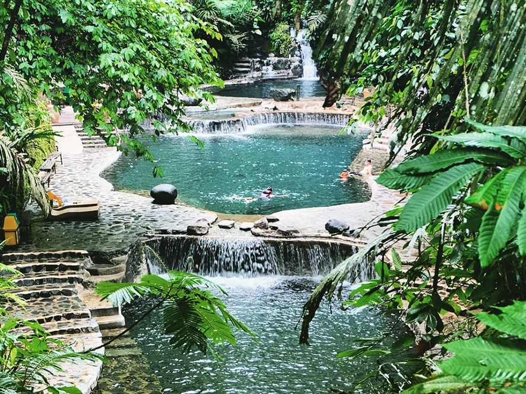

| THE MYTH OF MARIA MAKILING | |
|---|---|
| stream midnights <3333 | |
 |
The famous myth of Maria Makiling has a lot of renditions and most, if not all, tell the story of a heartbroken lady. In one, it is said that she fell in love with someone. This someone who is a hunter has met Maria while stumbling upon her land. Soon they fell in love, but their time together ended as soon after their love bloomed. One day, Maria learned about the hunter's infidelity and has concluded that all people are like that. So she has closed off all access to the resources of her territory and made it so that people can't benefit from it. |
| ORIGIN | SPOTS TO BE VISITED |
| midnights 3am version <33 | |
|
Maria Makiling, also known as Mariang Makiling originated from Laguna. She is a diwata that is said to be the protector of Mount Makiling. With this, the Laguna de Bay is also said to be a part of her territory. |
One of the places that you can visit in Laguna is Hidden Valley Springs. It is a tropical rainforest resort that is full with greenery and will immerse you with the nature that it is surrounded by.  True to the theme of this website, we have a fantastical spot that exhibits fun and adventure. It is a very popular theme park in the Philippines, and it is called Enchanted Kingdom. enchanted to meet you<3 |